Warum ist das Thema Glyphosat auch für Steinhagener Bürger wichtig?
Glyphosat ist das meistverkaufte Pflanzengift der Welt. Es wurde von der Firma Monsanto (USA) entwickelt und 1974 unter dem Namen Roundup auf den Markt gebracht.
In Deutschland wird es in vielen Bereichen der Landwirtschaft und auch in den privaten Hausgärten als preisgünstiges Herbizid verwendet.
Oft wird es auch kurz vor der Aussaat auf die Felder gebracht. Auf befestigten Flächen wird es oft verbotener Weise aufgebracht.
Vorher
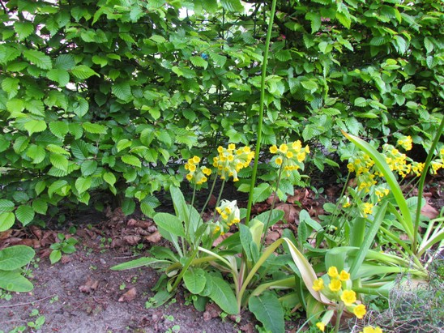
Nachher
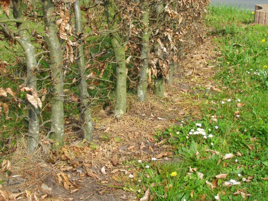
Informative Links zum Thema Glyphosat:
Wikipedia
Frankfurter Allgemeine Zeitung
Forum für Sauberes Trinkwasser
Industriegebiet GIB Langebrede, ehemals Hof Detert
Durch die Erschließung des neuen Industriegebietes zwischen Bahnhofstraße und Bielefelderstraße, mitten in Steinhagen, wird sich unser Ort ein weiteres Mal massiv verändern.
Denn ein GIB (Gewerbe- und Industriegebiet) bedeutet 24 Stunden Betrieb an 7 Tagen der Woche. So dürfen in Industriegebieten die Betriebe deutlich mehr Lärm machen – tag und nacht 70 dB! In Industriegebieten wird produziert, verpackt, gelagert und Güter mit LKWs hin- und her bewegt. Weiterer Dauerlärm und Abgase werden die Folgen sein. Die Belastungen der Bürger und Bürgerinnen entlang der Bielefelder/Woerdener Straße und der Bahnhofstraße werden sich somit auch in der Nacht und am Wochenende massiv verstärken.
So hat der Verein durch Rechtsanwalt Sedlak bereits vor der Entscheidung des Regionalrates per Schreiben erklärt, dass die Erschließung nicht gesichert ist und dass bereits ein Klageverfahren wegen des Baugebiets Waldbadstraße anhängig ist.
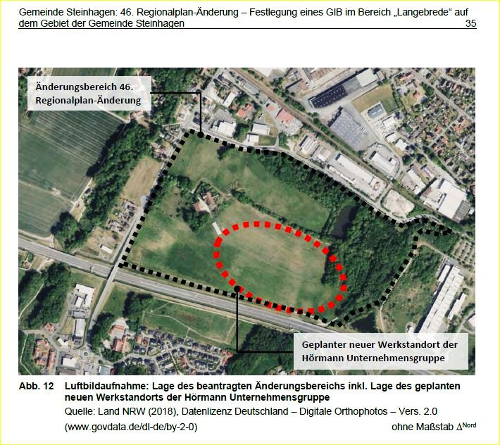
Stellungnahme vom 2. Mai 2021 zur Änderung des Regionalplanes für den Bereich des Gewerbe- und Industriegebietes Langebrede (ehemals Hof Detert) am 6. Mai 2021
Stellungnahme vom 2. Mai 2021 zur Änderung des Regionalplanes für den Bereich des Gewerbe- und Industriegebietes Langebrede (ehemals Hof Detert) am 6. Mai 2021
In dem nichtöffentlichen Teil der Ratssitzung, vom 24.03.2021, stimmten die Ratsmitglieder der Ansiedelung einer Firma zu. Nicht öffentlich; erinnern wir uns. In §4 (1) der Hauptsatzung der Gemeinde, aber auch in §23 der Gemeindeordnung NRW steht, dass der Rat die Bürger*innen über allgemein bedeutsame Angelegenheiten der Gemeinde zu unterrichten hat. Unter (2) steht: Eine Einwohnerversammlung soll insbesondere stattfinden, wenn es sich um Planungen oder Vorhaben der Gemeinde handelt, die die strukturelle Entwicklung der Gemeinde unmittelbar und nachhaltig beeinflussen oder die mit erheblichen Auswirkungen für eine Vielzahl von Einwohnerinnen und Einwohnern verbunden sind. Dass das Gebiet Langebrede (Detert) entwickelt werden soll ist seit langem geplant und die Ansätze im Rahmen einer Machbarkeitsstudie Voraussetzungen für eine Neuplanung mit hoher ökologischer, sozialer wie funktionaler Qualität zu verwirklichen war für viele Bürger*innen ein Schritt in die richtige Richtung, aber auch, dass sie beteiligt wurden.
Doch hier wurde nun am 24.03.2020 wieder etwas beschlossen, ohne dass die Öffentlichkeit informiert wurde. Nun könnte man sagen, da am kommenden Donnerstag die oben genannte Änderung auf der Tagesordnung steht, dass man noch darüber diskutieren könnte. Leider können nun die von uns Bürgern*innen gewählten Vertreter über die aus unserer Sicht wichtigste Entscheidung, ob der Standort wirklich richtig verortet ist, nicht mehr beraten. Diese Entscheidung wurde bereits ohne die Öffentlichkeit getroffen. So muss man sich wirklich fragen, ob die Einwohner*innen der Gemeinde von nun an immer ihre Interessen ohne die gewählten Vertreter aus der Politik, wahrnehmen müssen. Sind unsere Bürgervertreter*innen immer noch im `Coronaschlaf` oder fühlen sich nicht richtig informiert?
Dass die Beratungen dazu nun wieder `nicht öffentlich` stattfanden, erinnert sehr an die über fast 1 Jahr laufenden nicht öffentlichen Absprachen zum Gewerbepark an der Waldbadstraße.
Was ist mit den Zielen des Regionalplanes und des LEP (Landesentwicklungsplan), der übergeordneten Planungsebene des Regionalplanes? Zum Beispiel Ziel 7.3-1 und dessen Erläuterungen?
Zumutbare Alternativen schließen die Inanspruchnahme von Waldbereichen aus. Unter dem Gesichtspunkt der Zumutbarkeit kommen auch solche alternativen Planungen und Maßnahmen in Betracht, die den damit angestrebten Zweck in zeitlicher, räumlicher und funktionell-sachlicher Hinsicht nur mit Abstrichen am Zweckerfüllungsgrad erfüllen. Eine Alternative außerhalb von Waldbereichen kann deshalb auch zumutbar sein, wenn sie mit höheren Kosten, z. B. für den Grunderwerb und für die Erschließung, oder einem höheren Aufwand aufgrund geänderter Betriebsabläufe verbunden ist. (LEP)
Wir möchten unsere gewählten Damen und Herren des Bauausschusses bitten, dass sie beantragen, dass zur Beratung am Donnerstag, das vollständige Gutachten der Arbeitsgemeinschaft Biotopkartierung, Herford (2018), „Faunistische Untersuchung im Rahmen der Gewerbeflächenentwicklung Hof Detert in Steinhagen“, für alle Ausschussmitglieder vorliegt. Auch erwarten wir, dass diese Faunistische Untersuchung umgehend online gestellt wird, damit alle Bürger*innen diese einsehen können.
Ebenso sollte der Prüfbogen GT_Stha_GIB_001, erstellt von Kortemeier & Brokmann (2020) bereitliegen, denn hier geht es doch um die Korrektheit von Prüfbögen, die unserem Wissen nach erst als Entwurf in den Regionalplan aufgenommen werden sollen. Die jetzt, nach dem Willen der Politik zu beantragende Fläche wurde nie in den Prüfbögen berücksichtigt.
Aus unserer Sicht sollte der Tagesordnungspunkt 2 am Donnerstag vertagt werden.
Wir als Umweltverein haben Sorge, dass das vorher gut geplante ökologische Gewerbegebiet nun wieder durch die Hintertür verworfen wird.
Die Erarbeitung eines allgemeinen Verkehrskonzepts für Steinhagen ist die Grundvoraussetzung für weitere Planungen, anderenfalls wird es nicht nur auf der Bielefelder/Woerdener Straße zum Dauerstau kommen.
Informationen und nützliche Links
Beschlussvorlage
Anlage 1: Gebiete Planverfahren
Anlage 2: Ergebnisse der Arbeitsgruppe Detert
Anlage 3: Rahmenplan-Vorentwurf (Stand: 21.04.2022)
Beschlussvorlage Regionalrat RR-20-2021
Projektunterlagen Teile A bis C - Anlage 3 zu RR-20-2021
Umweltbericht - Anlage 4 zu RR-20-2021
Machbarkeitsstudie ZERO EMISSION GmbH
Baum des Jahres
2024
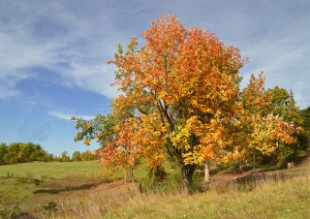
Die Echte Mehlbeere
Der Baum des Jahres 2024 ist ein beliebter Stadt- und Parkbaum. „Es ist zu erwarten, dass die Mehlbeere auch mit den zunehmenden Trockenperioden gut zurechtkommen wird. Daher wird sie zukünftig eine bedeutende Rolle in der Begrünung der Städte spielen“, erklärt Stefan Meier, Präsident der Baum des Jahres Stiftung.
Trotz ihrer geringen Wuchshöhe ist die Echte Mehlbeere eine beeindruckende Baumart. Vor allem im Herbst zeigt sie ihre volle Schönheit, denn dann scheinen die orange bis scharlachrot gefärbten Früchte durch die gelb bis goldbraune Laubkrone. Aber auch im Frühjahr macht sie eine gute Figur. Die weißen Blüten verbreiten einen wohlriechenden Duft und locken zahlreiche Insekten an.
Karriere in der Stadt
Ihr ansprechendes Aussehen, ihre Vorliebe für offene Standorte und ihre Fähigkeit, auch längere Trockenperioden zu ertragen, haben die Mehlbeere zu einem gern gepflanzten Stadtbaum werden lassen. Außerhalb der Städte wird sie - vorrangig an Nebenstrecken - gern als Alleebaum gepflanzt. Die bundesweite Gartenamtsleiterkonferenz (GALK) hat die Mehlbeere in die Liste der Zukunftsbäume für die Stadt aufgenommen. Die Begrünung von Städten wird in Zeiten des Klimawandels immer wichtiger. Straßenbäume und Parkanlagen verbessern das städtische Mikroklima, sorgen für Abkühlung und bessere Luft.
Die Echte Mehlbeere als Waldbaumart
Die Mehlbeere bevorzugt sonnige Standorte und wenig Konkurrenz. Aufgrund ihres vergleichsweise langsamen Wachstums wird sie häufig von anderen Baumarten verdrängt. Ältere Individuen kommen daher meist nur an den Stellen vor, wo andere Baumarten aufgrund schwieriger Boden- und Klimaverhältnisse nur schwer wachsen können. Heute wird die Pflanzung von Mehlbeeren vor allem bei der Anlage von Lawinenschutzwäldern in den alpinen Bergregionen gefördert. Auch für die seit einigen Jahren zunehmenden Wildobstpflanzungen zur Förderung des Naturschutzes wird die Mehlbeere ausdrücklich empfohlen.
(Quelle: Pressemitteilung Baum des Jahres – Dr. Silvius Wodarz Stiftung – 21385 Rehlingen – www.baum-des-jahres.de Berlin, 27.10.2023 - Bildautor: Jürgen-Blümle)
2023
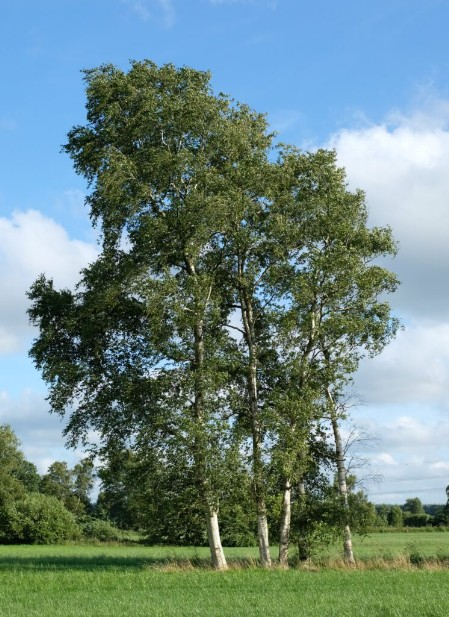
Moor-Birke
Der Baum des Jahres 2023 ist eine typische Art der Moore: Weithin sichtbar, mit ihren weißen Rindenpartien und den lichten, hellgrünen Baumkronen, bildet die Moor-Birke oft die einzige Baumvegetation in den wertvollen Sonderstandorten. „Moore sind für die Bindung von CO2 wichtig und ein Zuhause für seltene Arten“, erklärt Stefan Meier, Präsident der Baum des Jahres Stiftung.
Die Moor-Birke ist in den gemäßigten Klimazonen Mitteleuropas, Skandinaviens, Asiens
und Islands anzutreffen. Dennoch sind Moor-Birkenwälder in Deutschland stark gefährdet
und deshalb gesetzlich geschützt. Häufiger findet man den Baum des Jahres 2023
vereinzelt und am Rand von Mooren. Die Art unterscheidet sich von der viel weiter
verbreiteten Hängebirke durch ihre Blattform und die sich im höheren Alter rötlich
färbende Rinde. Betula pubescens tritt mit anderen typischen Arten vergesellschaftet auf,
wie Heidel- und Rauschbeeren, Torfmoosen, Wollgräsern und Seggen. An der Moor-Birke
selber finden verschiedene Insektenarten einen Lebensraum.
Moore speichern mehr Wasser und Kohlendioxid als jedes andere Ökosystem. Doch es
gibt Handlungsbedarf, denn intakte Moore sind in Deutschland selten. Lange haben
Menschen diese besonderen Lebensräume für ihre Zwecke genutzt: zum Abbau von Torf
oder um landwirtschaftliche Flächen zu gewinnen. Heute sind 90 Prozent der Moore
Deutschlands entwässert. Das große Problem: trocknen die Moore aus, setzen sie das
gebundene Kohlendioxid wieder frei. Intakte Moore sind also enorm wichtig für den
Wasserhaushalt und unser Klima. „Die Moorbirke wird uns 2023 als Symbol für dieses
Handlungsfeld begleiten“, betont Meier.
Cem Özdemir, Bundesminister für Ernährung und Landwirtschaft: „Unsere Moore sind
Klimaschützer, wertvolle Lebensräume und Wasserspeicher. Mit der Moor-Birke wird ein
Baum geehrt, der uns daran erinnert, wie wichtig es ist, Moore zu schützen und
wiederzuvernässen. Beides kann in Einklang mit einer nachhaltigen Bewirtschaftung
gebracht werden, daran arbeite ich."
Auch die neue Deutsche Baumkönigin, Johanna Werk, freut sich darauf, für die Moor-
Birke 2023 unterwegs zu sein und Renaturierungsmaßnahmen tatkräftig zu unterstützen.
Hintergrundinformation
Die kälteunempfindliche Moor-Birke war als Pionierbaum die erste Baumart nach der letzten Eiszeit und prägte auch die Landschaften des Bundesgebietes. Reife Moorbirken können bis zu vier Kilogramm Samen im Jahr produzieren, die der Wind kilometerweit verbreitet. Ihr helles Holz ist für den Möbelbau beliebt, allerdings aufgrund der geringen Haltbarkeit nur für den Innenbereich geeignet. In Deutschland dient die Moor-Birke vor allem als beliebtes Brennholz. Forstlich wird die Art auf feuchten Standorten zunehmend interessanter: beispielsweise in Mischung mit anderen Baumarten, wie Erlen oder Flatter-Ulmen. Hier laufen bereits erste Forschungsversuche. Auch als Heilpflanze hat die Moor-Birke eine lange Tradition: ob als Tee gegen Nierenbeschwerden, Gicht, Rheuma oder als Haarwasser, findet sich die Art in mancher Hausapotheke. Als Maibaum und Festschmuck ist sie im Frühjahr ein Symbol für erwachendes Leben.
(Quelle: Pressemitteilung Baum des Jahres – Dr. Silvius Wodarz Stiftung – 21385 Rehlingen – www.baum-des-jahres.de Berlin, 30.11.2022 - Foto: Die Moor-Birke, Baum des Jahres 2023 / Bildautor: Rudolf Fenner)
2022
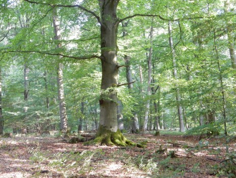
Rotbuche
Zum ersten Mal in der Geschichte des Baum des Jahres hat eine Art den Titel zwei mal geholt: Fagus sylvatica, die Rotbuche (die übrigens ganz und gar grün ist) hat es 1990 und 2022 geschafft. „Die Buche hat zwei wichtige Botschaften in Zeiten klimatischer Veränderungen und extremer Wetterereignisse – und deshalb haben wir uns dafür entschieden, die Art ein zweites Mal zu wählen“, erklärt Stefan Meier, Präsident der Baum des Jahres Stiftung. Georg Schirmbeck übernimmt die Schirmherrschaft für den wichtigen Waldbaum.
„Die letzten Jahre haben allen Wald-, Stadt- und Parkbäumen stark zugesetzt. Auch der Zustand der Altbuchen ist kritisch.“ erklärt Meier bei der Ausrufung des Baum des Jahres 2022 im niedersächsischen Bremke. Die Buche befindet sich in Deutschland im absoluten Wuchsoptimum. Sie kann Jahrzehnte im Schatten großer Waldbäume ausharren bevor sie in Führung geht. „Dass sogar Buchen so unter den letzten Jahren der Trockenheit und Schäden gelitten haben, schockiert mich als Förster“ sagt Meier.
Kein Alarmismus – Fakten
Doch es gibt auch eine gute Nachricht: „Die alten Bäume sehen nicht gut aus, aber man darf daraus nicht schlussfolgern, dass die jungen es auch nicht packen“, erklärt Andreas Roloff, Professor für Forstbotanik an der TU Dresden und Mitglied im Kuratorium Baum des Jahres. Hoffnung macht, dass erste Untersuchungen an Jungwüchsen gezeigt haben, dass auch die Buche durchaus fähig ist mit Klimaveränderungen umzugehen, so der erfahrene Forstmann und Fachbuchautor.
Buchen-König und die Mutter des Waldes
„Die ‚Mutter des Waldes’, wie die Buche im Volksmund auch genannt wird, ist aber mehr als ein Problemfall oder eine Baumart unter vielen im heimischen Wald“, so der wiedergewählte Deutsche Baumkönig, Nikolaus Fröhlich. Erwähnt man die Buche, entsteht umgehend Raum für Assoziationen, Emotionen und Bilder tauchen in den Köpfen auf: Da formieren sich widerstreitende Lager um alte Buchenbestände, Baumartenanteile und wertvolle Biotope. Dem Nächsten kommen Leimbindebalken aus kleinen Buchenstäbchen in den Sinn, einem anderen sauber geschichtete Brennholzstapel – den wenigsten hingegen die im Sommer allgegenwärtigen Eisstiele und all die anderen Alltagsgegenstände die aus dieser vielseitigen Baumart hergestellt sind. „Am Ende ist die Buche all das – die häufigste Laubbaumart Deutschlands mit unzähligen Facetten. Ich freue mich darauf, im kommenden Jahr so viele wie möglich davon zu entdecken und zu beleuchten!“ sagt Fröhlich.
(Quelle: Pressemitteilung Baum des Jahres – Dr. Silvius Wodarz Stiftung – 21385 Rehlingen – www.baum-des-jahres.de Göttingen, 28.10.2021)
2022
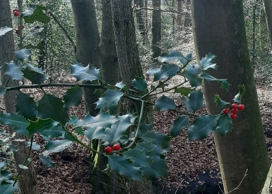
Europäische Stechpalme
Die Europäische Stechpalme (Ilex aquifolium) ist der 33. Jahresbaum
Die Europäische Stechpalme ist den Gartenbesitzern bestens als immergrüne Hecke oder Beerenschmuckpflanze bekannt. Was die wenigsten wissen ist, dass Ilex aquifolium früher sehr viel in unseren heimischen Wäldern vertreten war. So wurde die Europäische Stechpalme bereits von den Germanen verehrt. Auf Grund von industrieller Waldbewirtschaftung ist sie sehr selten geworden.
Ilex aquifolium ist eine sehr dauerhafte und robuste Pflanze. So kann dieser Kleinbaum ein Alter von mehr als 300 Jahren erreichen. Sie wird auch unter den deutschen Namen gewöhnliche oder gemeine Stechpalme geführt. Die europäische Stechpalme ist die einzig heimische Art unter den Ilex-Pflanzen.
Wuchsform
Ilex aquifolium ist als Kleinbaum oder als mehrstämmiger Großstrauch anzutreffen. Die Europäische Stechpalme bildet dabei sehr dicke Stämme mit einem Brusthöhendurchmesser von bis zu 50 cm. Diese Stämme müssen sich nicht stark verzweigen. Oft bilden sich schöne gerade Stämme bis in die Spitze. Die Krone ist dicht verzweigt und kegelförmig. Die Äste stehen dabei aufrecht vom kräftigen Stamm ab, so dass mit der Zeit der typische Kegelwuchs entsteht. Je nach Standort bleibt der Strauch oft auf einer Wuchshöhe von 1 bis 1,5 Meter stehen. An idealen Standorten bilden sich wunderschöne Exemplare von bis zu 10 Metern. Solche Exemplare sind vor allem an Küstennähe anzutreffen.
Insektenfreundliche Gärten
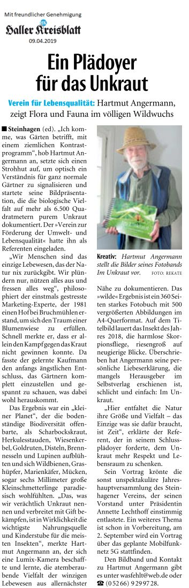
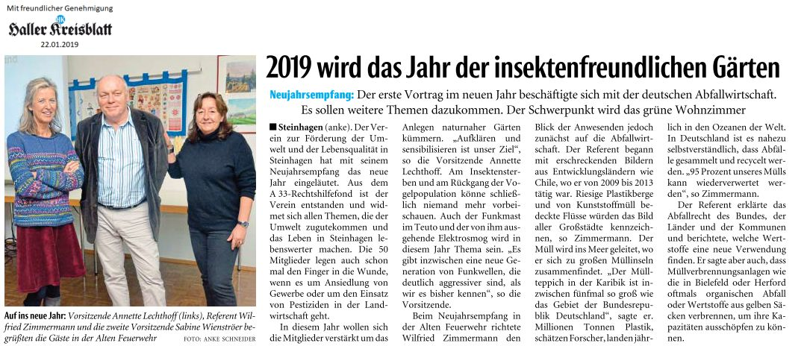
Gewerbepark Waldbadstraße/Hagedorn
Auf dem ehemaligen Gelände der Firma Gronemeyer & Banck, Waldbadstr. 88, Steinhagen soll ein Gewerbepark entstehen. Gegen einen Gewerbepark bzw. Ansiedlung kleinerer, einheimischer Betriebe, wobei die ökologischen und klimagerechten Grundlagen eingehalten würden, hätte die Anwohnergemeinschaft Waldbadstraße keine Einwände. Das Gebiet ist ja als Gewerbefläche ausgeschrieben.
Hier wird jedoch eine massive Bebauung geplant. (siehe Flyer 1)
2 Hallen, je ca. 200 m lang und mindestens 10 m hoch und eine kleinere Halle ca. 50 m lang und auch 10 m hoch mit insgesamt 36 Anfahrrampen zum Be- und Entladen irgendwelcher Waren.
- Versiegelung des Grundstücks von vorher ca. 60 % auf ca. 80 %.
- Fällung sehr vieler Bäume ohne Wiederanpflanzung auf demselben Grundstück.
- Lärmbelästigung und fehlende Verkehrssicherung auf der Waldbadstraße
- Der große Bau passt sich nicht dem Landschaftsbild an
Dieses Bauvorhaben soll laut Vorbescheid ca. 900 Fahrzeugbewegungen täglich erzeugen. Der Abfluss des Lieferverkehrs soll ausschließlich über die Waldbadstraße abgewickelt werden.
Die Waldbadstraße ist eine beruhigte 30er Zone mit anliegenden sozialen Einrichtungen wie Naturbad (ca. 20.000 Besucher in den Sommermonaten), Kindergarten, Altenheim, Kinderspielplatz und Bolzplatz. Außerdem Einzelhandel, Gastronomie und ein Schulweg.
Die verkehrsberuhigte, teilweise verengte Waldbadstraße kann lt. Meinung der Anwohner, aber auch vielen Bürger*innen von Steinhagen diese Verkehrsmenge gar nicht aufnehmen.
Die direkten Anwohner/innen sind von einem genehmigten Vorbescheid (27.02.2021) überrascht worden. Das gesamte Ausmaß des geplanten Bauvorhabens war auch Politik und schon gar nicht den Steinhagener Bürger*innen bekannt. Die Öffentlichkeit wurde nicht informiert.
Einige klageberechtigte Anwohner/innen haben sich gezwungen gesehen gegen diesen Vorbescheid zu klagen (siehe auch Flyer 2). Ende März 2021 wurde die Klage beim Verwaltungsgericht in Minden eingereicht. Seitdem wurden viele juristische Schriftsätze hin- und hergeschickt und einige Gutachten erstellt. Es haben Annährungsgespräche und bisher 2 Gütetermine stattgefunden. Bisher konnte es zu keiner außergerichtlichen Einigung kommen.
Mit einem Informationsschreiben der Firma Hagedorn wurde im Oktober 2020 eine Informationsveranstaltung angekündigt, jedoch fand diese nie statt. Im Dezember 2020 und Januar 2021 wurde die Verwaltung der Gemeinde Steinhagen um Vorstellung der Planentwürfe des Gewerbegebietes in den Bauausschusssitzungen aufgefordert. Bis heute Dez. 2021 ist sie dieser Aufforderung nicht nachgekommen.
Wie wichtig die Öffentlichkeitsbeteiligung, nicht nur der Anwohnergemeinschaft, sondern auch für alle Bürger/innen der Gemeinde gewesen wären, ergibt sich aus dem absoluten Unverständnis der Politik, die die Eigenmächtigkeit der Verwaltung massiv bemängelte.
Die Anwohnergemeinschaft erreichen Sie unter: waldbadstrasse(at)anwohnergemeinschaft@web.de
So entschied der Verein, die klagenden Anwohner*innen der Waldbadstraße gutachterlich zu unterstützen.
Gründe:
- Die Waldbadstraße ist für den zusätzlichen Verkehr nicht ausgelegt.
- Erhebliche Unfallgefahren besonders für Kinder und Radfahrer im Umfeld von KITA, Waldbad, Spielplatz, Seniorenheim.
- Die Kreuzung Bielefelder/Waldbad/Osterfeldstraße ist bereits heute überlastet.
-
Sogar der Kreis Gütersloh fordert ein städtisches Verkehrsmodel für Steinhagen zur Projektentwicklung!
Stellungnahme U. Elfers, Abteilung Straßenverkehr Kreis Gütersloh vom 26.10.2020
Die Kläger der Anwohnergemeinschaft Waldbadstraße werden juristisch vertreten durch:
Rechtsanwaltsbüro Wolfram Sedlak, Grafschaft-Vettelhofen
www.wolfram-sedlak-rechtsanwaltsbuero.de
und
Wulf Hahn, RegioConsult, Büro Marburg
www.regioconsult-marburg.com
(FG/SW Dez.2021)
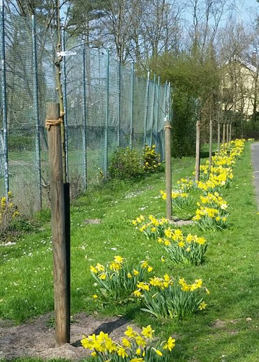
Bäume für Steinhagen
Bäume sind ganz natürliche Klimaschützer, sie binden das klimaschädliche CO2, versorgen uns mit Sauerstoff, wirken temperaturausgleichend, verbessern das Mikroklima, spenden Schatten und bieten wertvollen Lebensraum und Nahrung für zahlreiche heimische Tierarten.
So pflanzt der Verein in Kooperation mit dem Bauhof der Gemeinde, der Abteilung Umwelt- und Klimaschutzmanagement und der Biobaumschule Upmann, vorzugsweise im Spätherbst, verschiedene Obstbäume.
Die Gute Graue oder Köstliche von Charnen, aber auch Roter Münsterländer und Dülmener Herbstrosenapfel, sind die ausgefallenen Namen der alten Obstsorten.
Buchenrettung
Im April 2015 stellte der Verein nach § 28 BNatSchG, § 22 LNatSchG den Antrag auf Unterschutzstellung einer Buche als Naturdenkmal an der Liebigstraße.
Die gesunde Buche ist ca. 190 Jahre alt, hat einen Umfang in Höhe von 1m von ca. 3,30 m. Durchmesser beträgt somit ca. 1,05 m. Die Buche steht im Landschaftsschutzgebiet 2.2.2.
Mit Unterstützung der Gemeinde Steinhagen, die extra beim Neubau der Liebigstraße eine leichte Verschiebung vornahm, musste die Buche nicht abgeholzt werden. Sie erhielt genügend Raum für ihre Wurzeln und steht heute noch mit vollem Laub wunderbar an der Straße. Selbst die trockenen Jahre konnten ihr nichts anhaben.
Da der Kreis Gütersloh im 20. Jahre-Rhythmus neue Naturdenkmäler ausweist, da nächste Mal im Jahr 2025, wird der Verein zu gegebener Zeit einen neuen Antrag stellen.
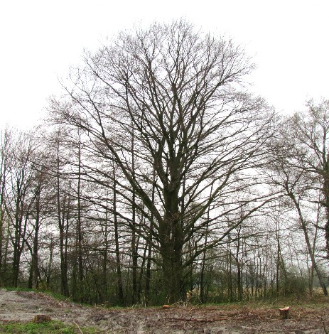
Feinstaub
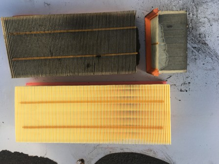
Oben links: Gebrauchter Luftfilter
Oben rechts: Gebrauchter Luftfilter (Querschnitt)
Unten: Neuer Luftfilter
Feinstaub ist nahezu unsichtbar und wird auch als Schwebstaub (englisch: Partikulate Matter)
bezeichnet. Er entsteht, wenn sich Substanzen und Gase verbinden.
Feinstaub wird unter anderem durch Verbrennungsprozesse im Straßen- und Luftverkehr, Kraftwerken,
in Öfen, Öl- und Gasheizungen und auch Holzheizungen hervorgerufen, wobei die Verbrennung von
Festbrennstoffen zu wesentlich höheren Feinstaubemissionen führt, als die Verbrennung flüssiger
oder gasförmiger Brennstoffe.
Der Straßenverkehr ist zusätzlich eine bedeutende Feinstaubquelle durch den Bremsen-,
Kupplungs- und Reifenabrieb.
In geschlossenen Räumen sorgen Rauch von Tabakwaren, Kopierern und Laserdruckern für
Feinstaubbelastungen bis zu zwei Milliarden Partikel pro gedruckter Seite.
Diese winzigen Staubteilchen sind in drei Klassen unterteilt:
- Partikel mit einem Durchmesser von 10 Mikrometer, also zehn Millionstel Meter und weniger (PM 10).
- Partikel, die vier Mal kleiner sind, mit einem Durchmesser von weniger als 2,5 Mikrometer (PM 2,5)
- Partikel, die ein Mikrometer und kleiner sind: so genannter Ultrafeinstaub (PM 0,1)
Sogar zu Silvester steigt die Belastung explosionsartig in der Größenordnung von 15 % des jährlich
im Straßenverkehr entstehenden Feinstaubs.
Jedoch ist die Feinstaubbelastung immer auch stark durch variierende Witterungsbedingungen beeinflusst.
Zum Beispiel durch die besonders langanhaltende Trockenheit und die steigenden Temperaturen der Vorjahre.
In Städten ist es fast immer ein paar Grad wärmer als im Umland. Das liegt an den vielen versiegelten Flächen.
Gebäude, Straßen, Parkplätze heizen ihre Umgebung auf.
Durch alles, was wir verbrennen, sowie Ammoniak und Methan aus der Landwirtschaft entsteht reaktiver Stickstoff, der dann durch Regen und Winde in die Böden und Gewässer getragen wird. Auch die Naturschutzgebiete sind schon belastet. Es wird vermutet, dass es bis zu 50 Kilogramm Stickstoff pro Hektar sind.
Die WHO empfiehlt strengere Grenzwerte als die EU.
Der EU-Grenzwert PM10-Jahresmittelwert darf 40μg/m³ nicht überschreiten.
Die WHO - Empfehlung PM10-Jahresmittelwert sollte 20μg/m³ nicht überschreiten.
Der EU-Grenzwert PM 2,5-Jahresmittelwert darf 25μg/m³ nicht überschreiten.
Die WHO-Empfehlung PM2 ,5-Jahresmittelwert sollte 10μg/m³ nicht überschreiten.
Es gibt auch natürliche Feinstaubquellen, die bei Vulkanausbrüchen, Bodenerosion und Waldbränden entstehen.
Dass Feinstaub gesundheitsschädlich ist, ist wissenschaftlich gut belegt. Je kleiner die Partikel sind,
desto größer ist das Risiko.
Eine langfristige Feinstaubbelastung kann zu Herz-Kreislauferkrankungen und Lungenkrebs führen, eine
bestehende COPD (Chronisch Obstruktive Lungenerkrankung) verschlimmern, sowie das Sterblichkeitsrisiko erhöhen.
In Deutschland konnten im Zeitraum 2007 bis 2015 im Mittel jährlich etwa 44.900 vorzeitige Todesfälle auf die
Feinstaubexposition im ländlichen und städtischen Hintergrund zurückgeführt werden.
Besonders anfällig sind Menschen mit Vorerkrankungen, ältere Menschen und Kinder. Bei Kindern können unter hoher
Feinstaub-Belastung Lungenwachstum und Lungenfunktion eingeschränkt werden.
Teilweise lagern sich an den Oberflächen der Partikel gefährliche Stoffe wie Schwermetalle oder Aluminium an, die dann beispielsweise Krebs erzeugen können. Doch auch die Partikel selbst sind ein Risiko – denn die kleineren Partikel dringen tiefer in die Atemwege ein. Ultrafeinstaub kann über die Lungenbläschen sogar ins Blut gelangen. Gelangen die ultrafeinen Partikel in die Blutbahn, können sie alle Organe erreichen. Das Blut kann dickflüssiger werden, die Gefahr eines Infarkts steigt. Sie können auch ins Gehirn gelangen, wo sie zu kleinen Schlaganfällen beitragen können.
Welchen Anteil die Landwirtschaft am gesamten Feinstaub in der Luft hat, ist nicht ganz klar. Das Max-Planck-Institut für Chemie geht davon aus, dass rund 45 Prozent des Feinstaubs in Deutschland aus der Landwirtschaft stammen. Die Berechnungen des Umweltbundesamtes (UBA) haben ergeben, dass es rund 20 Prozent sind.
Wenn die Luftqualität wieder einen hohen Stellenwert bekommen soll, dann ist das nur durch drastische Reduzierung des Verkehrs, durch veränderte Tierhaltung, ökologische Landwirtschaft und erneuerbare Energien möglich.
Umfassendere Informationen und Recherchen zur Luftqualität aktuell und in der Vergangenheit ermöglicht das erweiterte und neugestaltete Internet-Luftdatenportal des UBA.
Hochwasserschutz
Hier steht ein kurzer einleitender Text zum Thema feinstaub & Wasser.
- Nachhaltiger feinstaubschutz
- Regenrückhaltung und Versickerung
- Saubere Wasserversorgung in Steinhagen

Digitalisierung
Hier steht ein kurzer einleitender Text zum Thema feinstaub & Wasser.
- Nachhaltiger feinstaubschutz
- Regenrückhaltung und Versickerung
- Saubere Wasserversorgung in Steinhagen
Mobilfunk der 5. Generation
Die neue Technologie Mobilfunk hat sich mit rasanter Geschwindigkeit nahezu flächendeckend ausgebreitet und dringt in sämtliche Lebensbereiche vor. Mensch und Umwelt werden dabei einer ständig steigenden Belastung durch die sogenannte nichtionisierende Strahlung ausgesetzt. Was unterscheidet die natürliche Strahlung von der künstlichen/technischen Strahlung?
Politik und Industrie negieren oder verharmlosen negative Auswirkungen dieser neuen
Technologie. Dabei gibt es mittlerweile eine große Anzahl wissenschaftlicher
Untersuchungen, die ein breites Spektrum an gesundheitsrelevanten Einflüssen auf
den Menschen belegen, die in der Alltags-Realität der Menschen längst ihre Spuren
hinterlassen. Mit dem Mobilfunkstandard 5G sollten die Mobilfunknetze weiter verdichtet
werden.
Die Strahlenbelastung wird weiter steigen.
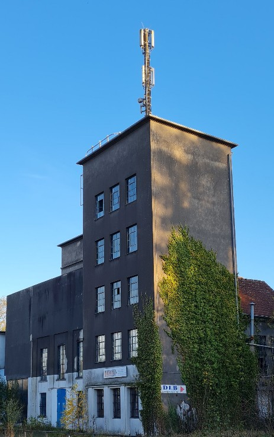
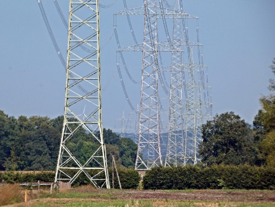
380 kV- Leitung
Bis 80 Meter hohe Strommasten direkt an oder neben Wohnhäusern, ist für viele Menschen, die an geplanten neuen Höchstspannungsleitungen wohnen, ein Albtraum. Aber ohne neue Stromtrassen geht es nicht. Weil derzeit und künftig besonders die Windkraftanlagen in Norddeutschland ausgebaut werden, muss der Strom zwangsläufig in den Süden transportiert werden.
Jedoch nicht unbedingt als Freileitung mit Monstermasten, denn die Erdverkabelung bietet eine Alternative.
Wie gefährlich ist eine Hochspannungsleitung?
Dass die menschliche Gesundheit durch Hochspannungsleitungen beeinträchtigt wird, steht heutzutage aus Frage. Denn unter anderem erzeugen die Leitungen elektrische und magnetische Felder, die den Körper beeinflussen können.
Grenzwerte im Vergleich (bei 50 Hz Wechselstrom):
| Schweiz: | 1,0 | Mikro-Tesla | (Orte empfindlicher Nutzung) |
| Italien: | 3,0 | Mikro-Tesla | (dauernder Aufenthalt von Menschen) |
| Deutschland: | 100,0 | Mikro-Tesla | (dauernder Aufenthalt von Menschen) |
Dieser Vergleich zeigt deutlich, dass in Deutschland sehr locker mit den
Gesundheitsrisiken durch sogenannte Expositionen umgegangen wird.
Schaut auch unter: https://380kv-te.de/
Verkehr und Lärmschutz
Hier steht ein kurzer einleitender Text zum Thema feinstaub & Wasser.
- Nachhaltiger feinstaubschutz
- Regenrückhaltung und Versickerung
- Saubere Wasserversorgung in Steinhagen